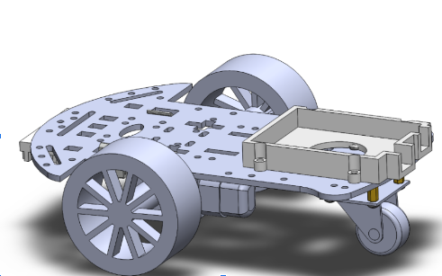
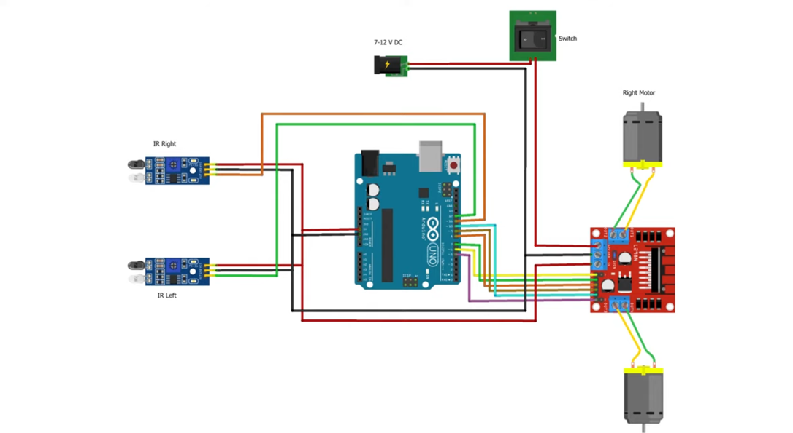

Line Following Robot


The Line Following Robot is designed to autonomously navigate a predefined path using an array of sensors. This project involves programming the robot to detect and follow a line with precision, even around curves and intersections.
Key features include PID control algorithms for smooth movement, real-time sensor data processing, and efficient power management. The robot is built with modular components to allow for easy upgrades and maintenance.
The Line Following Robot has been tested in various environments to ensure robustness and adaptability, making it an excellent platform for exploring autonomous navigation technologies.